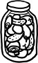

Erkeğin narsisti âşık olmayagörsün ince ince incitir zedeler sevdiğini, yemeğine zehir karıştırır gibi. Aşkla, alkolle, meyveyle, şekerle damıtılmış ağulu kokteyller ısmarlar sevdiğine. Sevgili ya da eş, hangisi ise duruma göre, bilmeden, hissetmeden, her gün biraz biraz alır bu zehirden. Usulca olur tükenişi, sinsice gerçekleşir kişiliğinin ölümü. Her gün biraz daha kaybeder gücünden, tahayyülünden, gerçekleştirmek istediklerinden. Sevgili ya da eş bilmez ki erkeğin narsisti içine alır, usulca kurutur kadınını. Kendine bağımlı kılarak yapar bunu. Kendine danışılmadan yapılan her şeyi eleştirir. Bağımsızlığı sevmez. Ne var ki bağımsızlığı sevmediğini açlıkça dile getirmez. Tam tersine, "elbette" diye gürler "elbette kadınımı bağımsız isterim ben. Kendi ayakları üzerinde dursun, vurdu mu inletsin, çatır çatır!" Ne var ki pratikte, gündelik yaşamın rutininde ve iki kişilik hayatların mahremiyetinde, birden tersine döner pusula. Erkeğin narsisti lafa gelince bağımsız kadın isterken, pratikte hamur gibi alıp şekillendirdiği bir eş ister. Hamur parçası dillenirse, hele hele ona karşı gelip başına buyruk hareket etmeye kalkışırsa, erkeğin narsisti sindiremez bu durumu, asabileşir. Anında tepki verir. Ama tepkisi de tıpkı hisleri gibi dolaylı ve maskelidir. Başka şeyleri bahane edip kavga eder, oysa tek derdi iktidarının tanınmamasıdır.
Kadının narsisti âşık olmayagörsün ince ince incitir zedeler sevdiğini, yemeğine zehir karıştırır gibi. Aşka, şekere, tarçına bulanmış ince kıyım zehirler ikram eder sofrada. Hiçbir lafını doğrudan doğruya söylemez, hep bir dolaylılık vardır üslubunda. Açıklamalardan çok imalarla konuşur, soru sormaktan ziyade ağız aramaya alışkındır. Kadının narsisti yatırımcıdır, uzun vadeli düşünür, spontanlıktan kaçınır ve risk almayı sevmez. Tartmadığı işe girmez, kendi çıkarına uygun görmediği erkeğe pas vermez. Kadının narsisti arşivcidir. Muhakkak biriktirir. Reçelcidir, turşucudur, kavanozcudur; meseleleri türlerine göre ayırıp, sirkeleşene kadar bekletir ruhunun kavanozlarında, hafızasının güneş görmemiş kuytularında. Sonra, mesela bir hadisenin üzerinden beş ay ya da iki sene geçmiş olsun, o pat diye açar bir kavanozu, masaya getirir o eski meseleyi, meğer hiç unutmamış, meğer bunca zaman bu anı beklemiş, meğer pusuya yatmış bir av hayvanı gibiymiş, meğer daha nice nice kavanozları varmış kişiliğinin kilerinde, dizili öyle mutsuz mutsuz raflara.
Birini sevdiğinize karar verdiniz diyelim, o noktadan itibaren akan sular duruyor, bir dokunulmazlık, bir haklar ve tacizler silsilesi ediniveriyorsunuz kendi gözünüzde. Maşuk fethedilecek bir kaleye, yaşam da o kalenin etrafında kazılacak siperlere, dehlizlere dönüşüyor. Mevcut köklü çiftler arasında da farklı değil kalıplar. Kuşatma üzerine kurulu ilişkiler, kuşatmanın esaret, esaretin mülkiyetle el ele gittiğini bilmezden gelerek. Durumdan memnun olan nice kadın tanıyorum, ilk bakışta şöyle okumuş, böyle akıllı, öyle kendine yeten nice kadın, ne gariptir ki kuşatıldıkça kendini emin hisseden, bağımlılıktan kuvvet devşiren. Durumdan memnun olan nice erkek tanıyorum, ilk bakışta şöyle açık fikirli, böyle duyarlı, öyle entelektüel, kuşattıkça kendini emin hisseden, başkalarının bağımlılığından kuvvet devşiren. Birbirlerinin gözüne sorgu lambası tutan ilişkiler bunlar. Sevilenin farklı, ayrı kişiliği olduğunu kabullenemeyen, kuşatmaya ele geçirmeye ya elde ya yok ya da elde-yok etmeye dayalı sömürgeci aşklar. İllaki "sen"i "biz" altında ezmeye, berikine dair her şeyi bilmeye, her nevi bilgi kırıntısını ele geçirmeye niyetli. Sevdiğinin hiçbir yanının, hiçbir anının karanlıkta ya da gölgede kalmasına tahammül edemeyen floresan lambası aşklar.
Oysa çirkindir floresan, çünkü çığırtkandır, işgalcidir. Ne bir esrarı vardır ne de adabı. Yekpare, yayılmacı bir fethetme arzusudur. Totaliterdir. Tahakkümperverdir. Floresan aşklar zehirlidir. Kurutur, köreltir, bitirir.
Erkeğin narsisti terk edilmişse felaket! Hele bu şekilde aşktan düşmeyegörsün, hemen bir telaşla herkese duyurur ilişkisinin bittiğini, kendini aklayan berikini suçlayan bir dizi açıklamayla beraber. Stratejik davranır, kime ne söyleyeceğini hesaplar. Açıklar ve beyan eder. Resmi tarih gibidir, ister ki kendi yorumu kalsın ayakta, tutanaklarda, ortalıklarda. İster ki zeval gelmesin kendine, prestijine, erkekliğine. Erkeğin narsisti bir ilişki biter bitmez derhal bir yenisine yönelir. Yalnız kalmaktan ödü patlar. Pohpohlanmadan, hayran olunmadan, bir başka bedenden enerji devşirmeden yaşaması imkânsızdır. O yüzden, vakit yitirmeden bir başka kadın bulur. Mümkün mertebe, bir öncekine nazaran bambaşka kumaştan dokunmuş bir kadın olur bu.
Kadının narsisti terk edilmişse felaket! Hele bu şekilde aşktan düşmeyegörsün, dinlenmeye, anlaşılmaya, onaylanmaya ihtiyaç duyar hemen. Başlar anlatmaya, ona buna, karşısına çıkana, yakın bulduğuna. Seçici davranmaz, aslolan konuşmak ve anlatmak ve aklanmaktır. Gevezeleşir, obsesifleşir, kindarlaşır. Yalnız kaldığında sık sık kilerine gider, tüm kavanozlarını elden geçirir, parlatır, açar, kapatır, asla unutmaz ve unutturmaz. Kafasında hayali intikam sahneleri tasarlar. Hep güzel ve bakımlı ve arzulanılasıdır bu sahnelerde. Kendini parlattıkça parlatır, cilalı bir elma gibi uzak doğallıktan, sahicilikten. Aklı ve rüyaları hâlâ eski sevgiliyi ya da eşi cezalandırmakla meşgul olduğundan, hemencecik yönelmez bir başka erkeğe. Kalabildiği kadar kalır post-ilişki (ilişki sonrası) aşamada, kavanozları arasında.
Kadın ya da erkek pek fark etmez, narsist âşık olmayagörsün, pahalı ışıltılı ama aslında içten içe sevmediği bir oyuncak bulmuş hırçın ve hırslı bir çocuk gibi alır kurcalar, bozar parçalar oyun nesnesini, muhakkak yok eder berikini.
Arizona